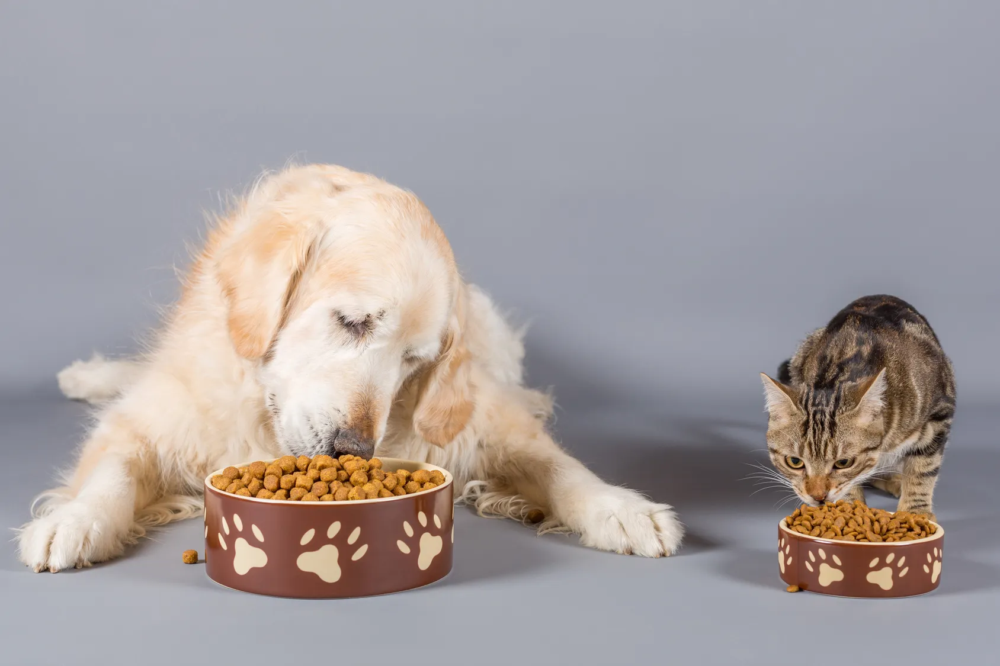
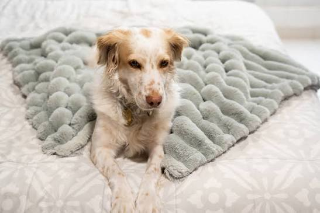
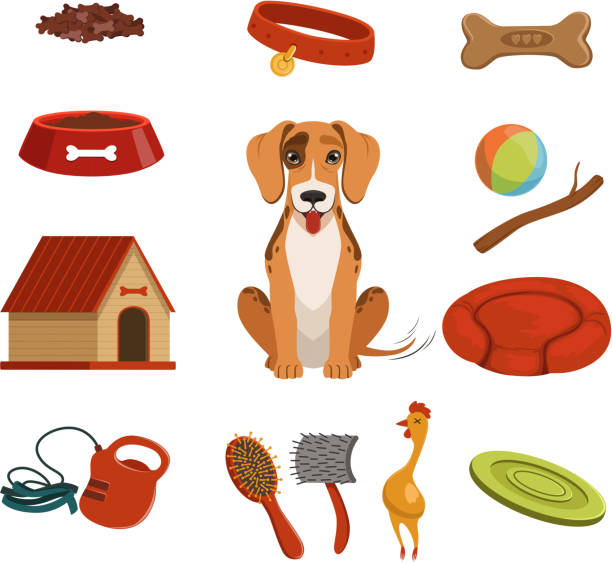

Alimentos
- Croquetas para perros.
- Alimento para gatos.
- Alimento para cachorros.
Tu ayuda puede cambiar una vida. 🐾
Puedes apoyar a los animales mediante donaciones de productos que ayudan a mantenerlos saludables, limpios y bien alimentados. Cada aportación hace una diferencia en sus vidas.



Lugar: Plantel escolar, área por confirmar.
Fecha: Por confirmar con el equipo PAEC.
Horario: Por confirmar.
Antes de llevar tus donaciones, consulta con el equipo el lugar, la fecha y el horario definitivos.
No necesitas hacer algo enorme para ayudar. Con una pequeña donación puedes contribuir al bienestar de muchos animalitos. ¡Gracias por formar parte de esta causa!